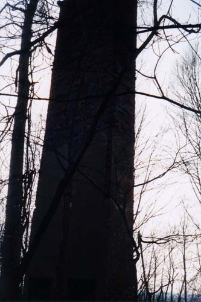
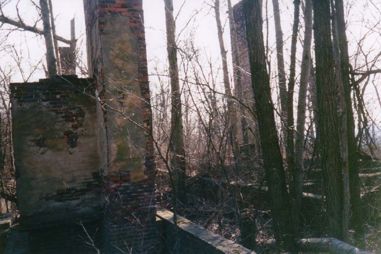

At the top of a very steep ridge behind the Congo store are the ruins of some sort of old building. Part of it still has diagonal slats of wood attached to form walls most of the way up, but the rest is a skeleton of a building with mazes of brick foundation and tall chimneys poking up like spires. Trees have grown up between the walls of foundation.

At the base of the chimneys are coal furnaces, which made me think for a long time that this building probably had something to do with the coal industry--Congo's only major industry, as far as I know. What the building was used for specifically was a mystery to me until a helpful e-mail informed me that it was the old Congo schoolhouse. The chimneys belonged to coal furnaces in each classroom.

Finding this structure was pure luck, the result of my noticing one of the chimneys from the road, but I'll bet not many people know about this one. The e-mail I got said a guy in his mid-sixties had gone there, which means it's had to have been in operation through at least the forties.
Above you see a photo of the Congo school, scanned from a newspaper clipping and contributed to the site. Is this the same building? I can't really tell, but it's possible.